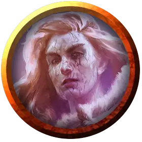

Шарвин Хукрел
Sharwyn Hucrele
Средний Гуманоид (Человек), нейтрально-злой, именной НИП

Класс Доспеха 16 (дубовая кора)
Хиты 13 (2к8 + 4)
Скорость 30 футов
| мод | спас | ||
|---|---|---|---|
| СИЛ | 11 | +0 | +0 |
| ЛОВ | 13 | +1 | +1 |
| ТЕЛ | 14 | +2 | +2 |
| мод | спас | ||
|---|---|---|---|
| ИНТ | 16 | +3 | +3 |
| МДР | 14 | +2 | +2 |
| ХАР | 9 | −1 | −1 |
Навыки Магия +5, Проницательность +4, Убеждение +1
Чувства пассивное Восприятие 12
Языки Общий, Гоблинский, Драконий
Опасность 1/2 (100 опыта)
Бонус мастерства +2
Особенности
Дубовая кора. КД Шарвин не может быть ниже 16.
Особое снаряжение. Шарвин имеет при себе книгу заклинаний в которой находятся все заклинания описанные в способности Использование заклинаний, плюс обнаружение магии [detect magic] и безмолвный образ [silent image].
Использование заклинаний. Шарвин является заклинателем 1-го уровня. Её базовой характеристикой является Интеллект (Сл спасброска от заклинаний 13, +5 к атакам заклинаниями). У неё подготовлены следующие заклинания волшебника:
• Заговоры (неограниченно): свет [light], фокусы [prestidigitation], луч холода [ray of frost];
• 1 уровень (4 ячейки): сверкающие брызги [color spray], волшебная стрела [magic missile], щит [shield], усыпление [sleep].
Древесная рабыня. Если древа Галтиас погибнет, Шарвин умрет через 24 часа.
Действия
Кинжал. . Рукопашная атака оружием: +4 к попаданию, досягаемость 5 футов, одна цель. Попадание: 4 (1к4 + 2) колющего урона.
Описание
Молодая искательница приключений, чья группа столкнулась с бандой гоблинов, Шарвин Хукрел теперь находится в плену глубоко в Цитадели Вечной тени, став невольной заложницей древа Галтиас. Тлетворное влияние сделало ее кожу толстой и шершавой, как будто на нее наложили заклинание дубовая кора [barkskin], и превратило обычно добродушную Шарвин в злобного противника.